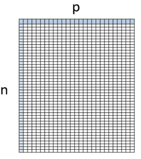

2 Introduction
Explanatory Data Analysis (EDA) is a basic step before modeling or hypothesis testing. MultiNav goal is to support efficient EDA of multivariate data by helping to gain more insights in less time. Uncovering interesting patterns and outliers as well as providing quick understanding of the important characteristics of a given multivariate dataset.
MultiNav combines interactive visualizations, with data pre-processing with algorithms from several fields. These include (naturally) multivariate statistics, but also robust statistics, process control, unsupervised machine learning, and network analysis.
The MultiNav R package, contains both data pre-processing functions as well as variety of customized statistical charts with interactivity options.
MultiNav is powered by an R backend, with javascript + D3.js frontend (enabled by utilizing HTMLwidgets). This architecture provides the aesthetic and interactivity of D3.js, with the computational power and flexibility of R.
2.1 Development
The package is currently in active development. The initial release contains only limited functionality. To get updates on package development news, subscribe for the MultiNav updates mailing list.
Testing, feedback and ideas are welcomed (via the github repository).
The package is developed based on learning’s from data analysis projects of industrial IoT real-world use cases.
Additional future functionality may be added, to include more pre-processing functions with statistical algorithms and custom charts to incorporate concepts from:
- Process monitoring.
- Outlier detection.
- Clustering.
- Dimension reduction.
- Robust statistics.
- Social network analysis.
2.2 Concept
The MultiNav package is designed to work with multivariate data where all variables are continuous and from the same scale.
- n - number of observations. Unique numeric id should be assigned to each observation in a column called ‘n_id’ or ‘seq_id’. If such column is not provided, row numbers will be assinged as id.
- p - number of variables. Unique numeric id should be assigned to each variable in a column called ‘p_id’ or ‘id’.

Packadge was Tested on:
- Continuous variables.
- Variables on same scale.
- n>p
- p>50 and p<2500
- Linear relationships
Important: Missing values should be handled prior to using MultiNav functions, as any records with missing values will be ignored. It is recommended to handle missing values as a pre-processing step (for example by interpolations and extrapolations).
2.3 Installation
Stable version from CRAN - not available yet.
install.packages("MultiNav")Or development version from GitHub
#install.packages("devtools")
devtools::install_github("efratvil/MultiNav")